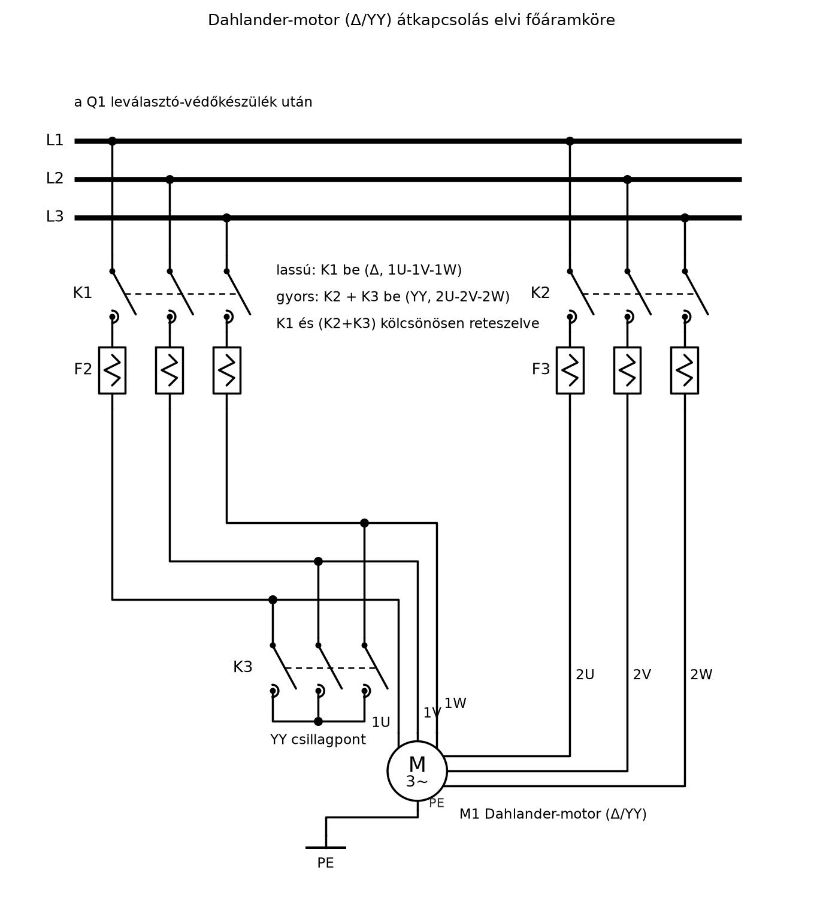
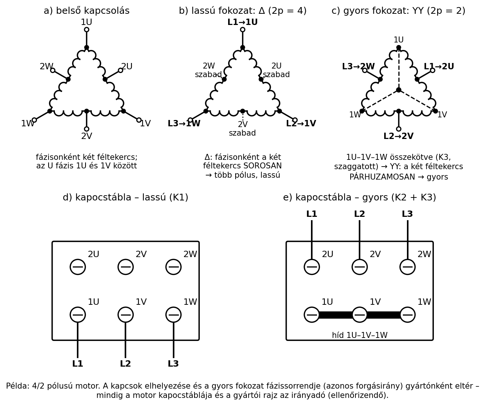
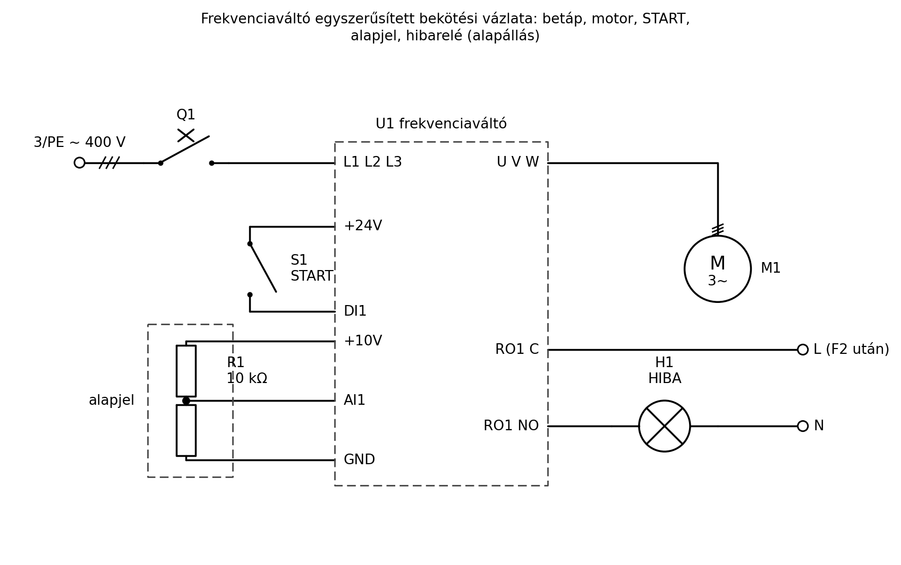
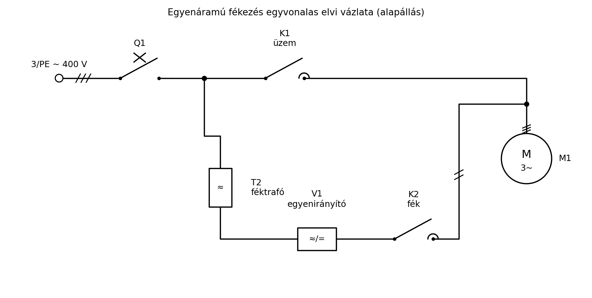
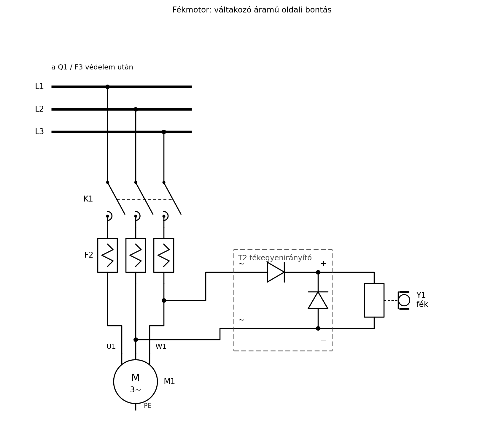
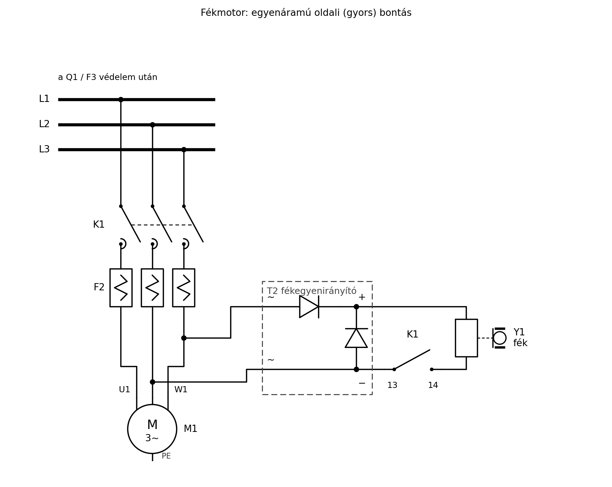

Statikus változat (mint a PDF-ben)
Egy szellőzőventilátornál gyakran nem a teljes levegőmennyiségre van szükség. Ha a motort állandó névleges fordulatszámon járatjuk, és a levegőmennyiséget zsalukkal vagy fojtószerkezettel csökkentjük, a motor továbbra is majdnem teljes áramot vehet fel, a fölösleges nyomás pedig a fojtáson hővé alakul. Ugyanez igaz szivattyúra, szállítószalagra, darura vagy szerszámgépre is: a fordulatszám a folyamat igényéhez igazítása energiát takarít meg, kíméli a mechanikát, és jobb technológiát ad.
A csúszógyűrűs motorokról és az indításról már volt szó az Indítás: közvetlen, csillag–delta, lágyindító, csúszógyűrűs alfejezetben. Most arra válaszolunk, mi történik indítás után: hogyan lehet egy aszinkron motor fordulatszámát tartósan eltéríteni a névleges értéktől, és hogyan lehet a hajtást szabályozottan lefékezni.
Az aszinkron gép fordulatszáma a szinkron fordulatszám és a szlip ismeretében:
ahol
Ebből a képletből közvetlenül látszik, hogy a fordulatszám három villamos úton befolyásolható:
A szlip növelése általában veszteséges, mert a forgórészkörben a szliparányos teljesítmény hővé alakul, ezért csak korlátozottan, például lágyindításkor, csúszógyűrűs hajtásnál vagy kis fordulatszám-tartományban használják.
Ha a folyamatnak két elkülönült, jól meghatározott fordulatszámra van szüksége, a pólusszámváltós motor egyszerű és olcsó megoldás lehet. A legismertebb kialakítás a Dahlander-motor (átkapcsolható tekercselésű, kétsebességű aszinkron motor), amely egyetlen állórésztekercseléssel két pólusszámot tud megvalósítani. A gyakorlatban a két szinkron fordulatszám jellemzően 1:2 arányú, például esetén és 1/min, vagy esetén és 1/min szinkron értéket ad. A tényleges terhelt fordulatszám a szlip miatt kissé kisebb.
A működési elv a tekercscsoportok soros, illetve párhuzamos kapcsolásán alapul. A lassú fokozatban a tekercsrészek úgy kapcsolódnak, hogy nagyobb pólusszám alakul ki; a gyors fokozatban ugyanazok a részek úgy kapcsolódnak, hogy a pólusszám feleződik. A kapocsdobozban gyakran a delta/kettős csillag (/YY) átkapcsolást találjuk, de más kapcsolási csoport is előfordul; mindig a kapocstábla és a gyártói dokumentáció a mérvadó.
Figyelem. A Dahlander-motor nem folyamatos fordulatszám-szabályozó, csak két diszkrét fokozatot ad. Ha a folyamat finoman változtatható fordulatot kíván, akkor frekvenciaváltóra lesz szükség.
A gyakorlatban a fokozatokat egymással reteszelt mágneskapcsolók választják ki. A /YY Dahlander-motornál a lassú fokozatban K1 az 1U–1V–1W kapcsokat táplálja (a 2U–2V–2W kapcsok szabadon maradnak); a gyors fokozatban K2 a 2U–2V–2W kapcsokat táplálja, K3 pedig az 1U–1V–1W kapcsokat köti össze, ez adja a kettős csillag csillagpontját. Az alábbi rajz a főáramkör szemléltető váza (egy motor, hat kivezetés, három kontaktor), nem teljes huzalozási terv.

A két fokozat kiválasztásának villamos reteszelése különösen fontos: ha valaki egyszerre kapcsolná be a lassú és a gyors kontaktort, a motor egyszerre két különböző kapcsolásban látna feszültséget, ami rövidzárlathoz, tekercskárosodáshoz és balesethez vezethet.
Hogy miért feleződik a pólusszám, azt a tekercselés belső kapcsolása mutatja. A /YY Dahlander-motor minden fázistekercse két egyforma féltekercsből áll; a delta csúcsai az 1U, 1V, 1W kapcsok, a két féltekercs közötti pontok a 2U, 2V, 2W kapcsok. Lassú fokozatban (deltában) a két féltekercs sorosan, azonos áramiránnyal kapcsolódik; gyors fokozatban (kettős csillagban) párhuzamosan, és az egyikben megfordul az áram iránya – ettől lesz a mágneses pólusok száma a fele. A következő ábra a belső kapcsolást, a két üzemállapotot és a hatkapcsos kapocstáblát mutatja.

Kövesd végig az ábrán: lassú fokozatban hova kerül a tápfeszültség, és miért kell a 2U–2V–2W kapcsokat szabadon (szigetelve) hagyni? Gyors fokozatban miért nem szabad az 1U–1V–1W hidat elhagyni? A kapcsok elhelyezése és a gyors fokozat fázissorrendje (az azonos forgásirányhoz) gyártónként eltér, ezért mindig a motor kapocstáblája és a gyártói rajz a mérvadó.
A kétsebességű motoroknak három gyakori fajtája van:
| Típus | Lassú fokozat | Gyors fokozat | Teljesítményarány | Jellemző alkalmazás |
|---|---|---|---|---|
| /YY Dahlander (állandó nyomatékú) | , 1U–1V–1W | YY, 2U–2V–2W, 1U–1V–1W összekötve | kb. – | szállítóberendezés, szerszámgép |
| Y/YY Dahlander (csökkenő nyomatékú) | Y, 1U–1V–1W | YY, 2U–2V–2W, 1U–1V–1W összekötve | kb. – | ventilátor, szivattyú (a nyomatékigény -tel nő) |
| Két külön tekercselés | az egyik tekercs (pl. 6 pólusú) | a másik tekercs (pl. 4 pólusú) | a két tekercs adataitól függ | tetszőleges fordulatszámpár, pl. 1000/1500 1/min (nem 1:2) |
A két külön tekercselésű motornál a két fordulatszám aránya nem kötött, viszont a nem használt tekercset nyitva kell hagyni (nem szabad zárt körré kötni, mert benne a működő tekercs mezője áramot indukálna), és a két kontaktort villamosan és mechanikusan is reteszelni kell.
A Dahlander-motort tipikusan ott alkalmazzák, ahol két üzemi pont elég, például kétfokozatú ventilátornál, keverőgépnél, régi szerszámgépek főhajtásánál vagy mosógép dobjánál. Előnye, hogy nincs szükség drága elektronikára, hátránya viszont a fix fokozatok, a nagyobb indítási áramlökés, valamint a tekercselés és az átkapcsoló kapcsolás bonyolultsága.
A mai, energiatakarékos hajtások leggyakoribb eszköze a frekvenciaváltó (VFD, variable frequency drive). A frekvenciaváltó a hálózati 50 Hz-es feszültséget egyenirányítja, egyenfeszültségű közbenső körbe viszi, majd félvezetős inverterrel változtatható frekvenciájú és nagyságú háromfázisú feszültséget állít elő. Az aszinkron motor szinkron fordulatszáma így:
szerint folyamatosan változtatható.
Az aszinkron motor állórészfluxusát közelítőleg a feszültség/frekvencia arány határozza meg. Ha csak az frekvenciát csökkentenénk, de a feszültséget nem, a motor vasat telítésbe vinné, a gerjesztő áram és a veszteség megnőne. Ha csak a feszültséget csökkentenénk változatlan frekvenciánál, a fluxus lecsökkenne, és a motor nyomatéka összeesne. Ezért a frekvenciaváltó a névleges pont alatt közelítőleg állandó arányt tart:
Például ha a motor névleges feszültsége , a hálózati frekvencia , akkor az arány . Ennél a motornál frekvencián körülbelül vonali feszültség szükséges ahhoz, hogy a nyomaték közel névleges maradjon. A névleges frekvencia felett a feszültség már nem növelhető tovább biztonságosan, ezért a frekvencia növelésével a fluxus csökken. Ez a mezőgyengítéses tartomány: a nyomaték csökken, a teljesítmény viszont közel állandó lehet.
Interaktív ábra. Az alábbi interaktív ábrán (a nyomtatott kiadásban statikus változat) egy csúszkával lehet állítani a frekvenciát és között. Az ábra egyszerre mutatja a egyenest és a hozzá tartozó nyomaték-fordulatszám görbét. A görbék a Szlip, nyomaték, jelleggörbe és adattábla alfejezet 5,5 kW-os motorjának Kloss-modelljéből számoltak ( N·m, 50 Hz-en, azaz a billenőpont 1/min-tel a szinkron fordulatszám alatt van). Állandó mellett a görbe alakja nem változik, csak a fordulatszám-tengely mentén tolódik el: és -en a billenőnyomaték azonos ( N·m), -en a mezőgyengítés miatt kb. N·m-re csökken.
A frekvenciaváltó betáplálását általában leválasztó/védő kismegszakítóval látják el, a kimenő motorkábelt pedig árnyékolt kábellel kötik a motorhoz. A védővezetőt a hálózat felől a frekvenciaváltón keresztül a motorig végig folytonosan kell vezetni.

A frekvenciaváltó kimenete nem szinuszos, hanem nagy kapcsolási frekvenciájú, impulzusszerű feszültség. A motor induktivitása kisimítja az áramot, ezért a motoráram már közel szinuszos, de a kábel és a motor mégis nagyobb villamos igénybevételt kaphat.
EMC és szerelési szabályok.
A főáramkörön kívül a frekvenciaváltónak vezérlőkapcsai is vannak: ezeken kapja az indítási parancsot és a fordulatszám-alapjelet, és ezeken jelzi vissza az állapotát. Az alábbi egyszerűsített vázlat a legfontosabbakat mutatja:

A teljes fő- és vezérlőköri tervlapot (DI1–DI4, AI1/AI2, hibarelé, STO vészleállítóval, fékellenállás, hálózati fojtó, EMC-szűrő, árnyékolt kábel) a Motorvédelmek, lágyindítók és frekvenciaváltók az elosztóban alfejezet (35.1) „Teljes frekvenciaváltós leágazás: főáramkör és vezérlőkapcsok egy lapon” része mutatja; a bekötés és a paraméterek összerendelését a Frekvenciaváltó és lágyindító paraméterezése alfejezet (41.4) gyakorlata végzi.
A frekvenciaváltó a motorvédő kapcsoló és a lágyindító funkcióit egy készülékben tudja ellátni, de a védelmet paraméterezni kell:
Figyelem. A frekvenciaváltó kondenzátorai kikapcsolás után is életveszélyes feszültséget tárolhatnak. A készülék megbontása előtt a gyártói utasításban megadott kisülési időt mindig ki kell várni, és a feszültségmentességet meg kell mérni. Hálózati feszültségű munkát csak jogosult személy végezhet.
Az aszinkron motor leállítása nem mindig lehet természetes kifutás. Ha a terhelést gyorsan, iránytartóan vagy biztonságosan kell megállítani, aktív fék kell. A négy fő módszer:
Elv. A hálózatról leválasztott motor két állórész-kapcsára egyenáramot vezetünk. Az egyenáram álló mágneses teret hoz létre; a még forgó forgórész vezetőiben ebben a térben áram indukálódik, és ennek nyomatéka a forgással ellentétes – a motor fékez. A fékenergia a forgórészben hővé alakul, és az álló motor tekercse a fékáramtól tovább melegszik, ezért a fékidőt korlátozni kell. A fékezés csak lassít, nem tart: nulla fordulatszámon nincs fékező nyomaték, ezért emelőgépen nem helyettesíti a mechanikus tartóféket.

A vázlaton a K1 (üzem) és a K2 (fék) soha nem lehet egyszerre zárva – ezt a vezérlőkörben kölcsönös retesz biztosítja. A teljes fő- és vezérlőkört (S0 kettős nyomógomb, K1/K2 retesz, KT1 fékidő-relé, T2, V1) a Kétsebességű, sorrendi és késleltetett vezérlések alfejezet (32.4) „Motorfékezés vezérlése” része mutatja.
Az ellenáramú fékezésnél a leállításkor a motor két fázisát felcseréljük (a reverzáló kapcsolás ellenirányú kontaktorával), így a forgó mező iránya megfordul, és a motor teljes nyomatékkal fékez. A fékáram nagy – közel az indítási áram –, ezért a motor és a kontaktor erősen melegszik; a kontaktort AC-4 kategóriára kell választani (lásd: Kapcsolókészülékek működése, ívoltás és használati kategóriák). A legfontosabb elem a fordulatőr (B1, nullfordulat-relé): a megállás pillanatában bont, és lekapcsolja az ellenirányú kontaktort – nélküle a motor ellenkező irányba indulna. Időrelével helyettesíteni csak bizonytalanul lehet, mert a leállási idő a terheléstől függ. A fő- és vezérlőkört a Kétsebességű, sorrendi és késleltetett vezérlések alfejezet (32.4) „Motorfékezés vezérlése” részének 2. rajza mutatja.
A rugóerős (tárcsa)fékes motornál a fék árammentesen zár: a rugók a fékbetétet a tárcsához szorítják, és a féktekercs (Y1) egyenárammal húzza el a horgonylemezt, azaz oldja a féket. A féktekercs egyenfeszültségét a motor kapocsdobozába épített fékegyenirányító (T2) állítja elő. Az alábbi három szemléltető rajz a három jellemző bekötést mutatja; a fékfeszültség-változatot és a pontos kötést mindig a motor gyártói bekötési rajza adja meg (ellenőrizendő: gyártói dokumentáció).
Az első rajzon az egyenirányító a motor két kapcsáról kap tápot, és csak a váltakozó áramú oldalon bont (K1 a motorral együtt):

Kövesd végig: K1 kikapcsolása után a kifutó motor még visszmaradó feszültséget ad, és a féktekercs árama a szabadonfutó diódán át lassan cseng le – a fék késve (szemléltető: néhány száz ms) zár. Szállítószalagnál ez elfogadható, emelőgépen nem, mert közben a teher megindulhat.
Ezért emelőgépeknél a fék egyenáramú körét is bontani kell – K1 egy segédérintkezőjével vagy a gyártó gyorskapcsoló moduljával:

Itt a tekercsáram kikapcsoláskor azonnal megszakad, a fék néhányszor tíz ms alatt zár (ellenőrizendő: gyártói adat). Az egyenáramú oldalt bontó érintkezőnek induktív egyenáramú terhelésre méretezettnek kell lennie, és a gyártó gyakran túlfeszültség-korlátozót (varisztort) is előír.
Frekvenciaváltós hajtásnál a fék tápja nem jöhet a motorkapcsokról, mert ott a feszültség és a frekvencia indításkor kicsi és változó. A fék külön tápot kap, és a frekvenciaváltó fékvezérlésre programozott relékimenete (K3) kapcsolja:
![Fékmotor frekvenciaváltós hajtásnál: külön féktáp, FV-vezérelt fék - A fék tápja nem a motorkapcsokról jön (a FV kimenete változó frekvenciájú és feszültségű), hanem külön 230 V AC-ből a Q3-on át. A K3 a frekvenciaváltó fékvezérlésre programozott relékimenete: indításkor csak a nyomaték felépülése után old, leálláskor előbb zár, mint a FV a nyomatékot leveszi (beállítás: gyártói kézikönyv, ellenőrizendő). Emelőnél a K3 mellett a fék egyenáramú oldali bontása is szükséges (ellenőrizendő). Szemléltető vázlat; a frekvenciaváltó betűjele (U1) a 35.1 rajzaival egyezik (ellenőrizendő: MSZ EN IEC 81346-2).](assets/ve097-diagram-7.png)
Így a fék csak akkor old, amikor a frekvenciaváltó már felépítette a motor nyomatékát (a teher nem esik vissza), leálláskor pedig előbb zár, mint ahogy a váltó a nyomatékot leveszi. A rajzon kérdés: mi történne, ha a fék a motorkapcsokról kapna tápot, és a váltó 2 Hz-ről indítana?
A fék légrését és a fékbetét kopását a gyártói utasítás szerinti időközönként ellenőrizni kell; a kopott betét miatt megnőtt légrésnél a tekercs már nem tudja elhúzni a horgonylemezt, a motor behúzott fékkel indul és túlmelegszik. Sok fékmotoron kézi oldókar van, amellyel áramszünetben vagy szereléskor a fék kézzel oldható – terhelt emelőn ez csak a gyártói utasítás szerint, biztosított teherrel szabad. Biztonság: emelőgép fékjének beállítása, légrésének állítása és a fékkör módosítása szakember (a gép gyártója vagy megbízott szervize) feladata, és utána üzempróbát kell tartani (ellenőrizendő: az emelőgépekre vonatkozó biztonsági szabályzat).
Egy szellőztető rendszerben a motor közvetlen indítással, állandó -en járt, a levegőmennyiséget pedig motoros zsaluval fojtották. Az áramfelvétel alig csökkent, a zaj és a karbantartási igény viszont nagy volt. A kivitelező frekvenciaváltót épített be, a zsalut teljesen nyitva hagyta, és a fordulatot nyomásjel alapján szabályozta. A ventilátor teljesítményfelvétele a fordulatszám harmadik hatványával csökkent, ezért már -os fordulaton is jelentős energia-megtakarítás jelentkezett. A hibakeresés során azonban először túlfeszültség-hibát tapasztaltak lassításkor: a motor generátoros üzembe került, és a közbenső kör feszültsége megnőtt. A megoldás a lassítási idő növelése, majd később fékellenállás beépítése volt.
Számoljuk ki! Legyen a ventilátor tengelyteljesítménye a névleges ponton , évi 4000 üzemórában a légmennyiség a névleges -a (szemléltető példaadat).
Tanulság: a megtakarítás nagysága azon múlik, mennyit vesz fel a hajtás fojtott állapotban. Ezért a csere előtt mérni kell (jogosult személy, teljesítménymérővel, lakatfogóval), és a mért értékkel kell az ügyfélnek érvelni.
Gyakorlás: ennek az alfejezetnek a kidolgozott példái, gyakorlatai és megoldással ellátott feladatai az Összefoglaló feladatgyűjtemény villanyszerelő tanulóknak című kötet 26.5 szakaszában találhatók.
Az aszinkron motor fordulatszámát az összefüggés szerint elsősorban a pólusszám, a frekvencia vagy a szlip változtatásával lehet befolyásolni. A Dahlander-motor egy átkapcsolható tekercseléssel két, jellemzően 1:2 arányú fokozatot ad, de nem folyamatos szabályozó. A modern, energiatakarékos megoldás a frekvenciaváltó, amely a névleges frekvencia alatt közel állandó arányt tart, a fölött pedig mezőgyengítéssel működik. A frekvenciaváltó beépítésekor a motor túlterhelés-, rövidzárlat- és hővédelmét, az EMC-szerelést és az árnyékolt, jól földelt motorkábelt kiemelten kell kezelni. Fékezésre mechanikus, egyenáramú, ellenáramú vagy generátoros módszer használható; a tartófék mindig mechanikus legyen, ha a teher áram nélkül is elmozdulhatna. Továbbvitt eredmény. A frekvenciaváltó paraméterezését és hibakódjait a Vezérlések hibakeresése és a Motorvédelmek, lágyindítók és frekvenciaváltók az elosztóban alfejezet használja fel; a Dahlander kapcsolás kontaktoros logikáját a Kétsebességű, sorrendi és késleltetett vezérlések alfejezet tárgyalja.